3.2.4. Блочный шифр ГОСТ Р 34.12-2015 «КУЗНЕЧИК»
3.2 .4. Блочный шифр ГОСТ Р 34.12−2015 «Кузнечик»
Блочный шифр «Кузнечик» (входит в стандарт ГОСТ Р 34.12−2015) − симметричный алгоритм блочного шифрования с размером блока 128 битов и длиной ключа 256 битов и использующий для генерации раундовых ключей сеть Фейстеля.
Алгоритм «Кузнечик» является более современной и теоретически более стойкой версией его устаревшей версии − алгоритма «Магма» (который, по сути, практически без изменений был взят из старого ГОСТ 28147−89).
Отличия ГОСТ Р 34.12−2015 «Кузнечик» от ГОСТ 28147-89 «Магма»:
• вдвое увеличенная длина блока (128 бит, против 64 бит);
• нетривиальное ключевое расписание (сеть Фейстеля как ключевое расписание против использования частей секретного ключа в качестве цикловых ключей);
• сокращенное число циклов (10 циклов против 32 циклов);
• принципиально иное устройство самого шифра (LSX-шифр против сети Фейстеля).
Шифрование основано на последовательном применении нескольких однотипных раундов, каждый из которых содержит три преобразования: сложение с раундовым ключом, преобразование блоком подстановок и линейное преобразование.
128-битный входной вектор очередного раунда складывается побитно с раундовым ключом:
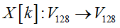 |
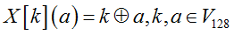 |
Нелинейное преобразование представляет собой применение к каждому 8-битному подвектору 128-битного входного вектора фиксированной подстановки:
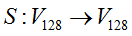 |
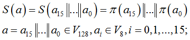 |
Линейное преобразование может быть реализовано не только как обычно в блочных шифрах − матрицей, но и с помощью линейного регистра сдвига с обратной связью, который движется 16 раз:
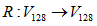 |
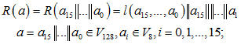 |
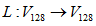 |
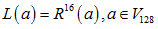 |
Сам регистр (рис. 3.18) реализуется над полем Галуа по модулю неприводимого многочлена степени 8:
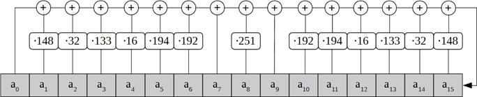
Рис. 3.18. Реализация регистра
Раундовое преобразование можно изобразить следующим образом (рис. 3.19).
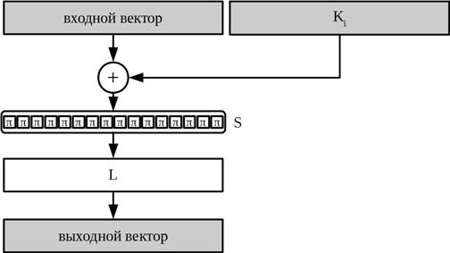
Рис. 3.19. Схема раундового преобразования
Процедура генерации раундовых ключей из ключа представлена на рис. 3.20. Первые два получаются разбиением ключа пополам. Далее для выработки очередной пары раундовых ключей используется 8 итераций сети Фейстеля, где, в свою очередь, в качестве раундовых ключей используется счетчиковая последовательность, прошедшая через линейное преобразование алгоритма:
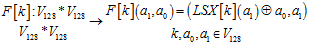
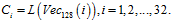
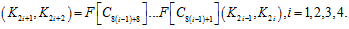
Рис. 3.20. Схема процедуры генерации раундовых ключей из ключа
В результате, шифрование одного 128-битного входного блока описывается следующим уравнением:
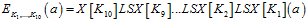.
Расшифрование реализуется обращением базовых преобразований и применением их в обратном порядке (рис. 3.21):
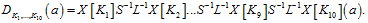

Рис. 3.21. Схема расшифрования